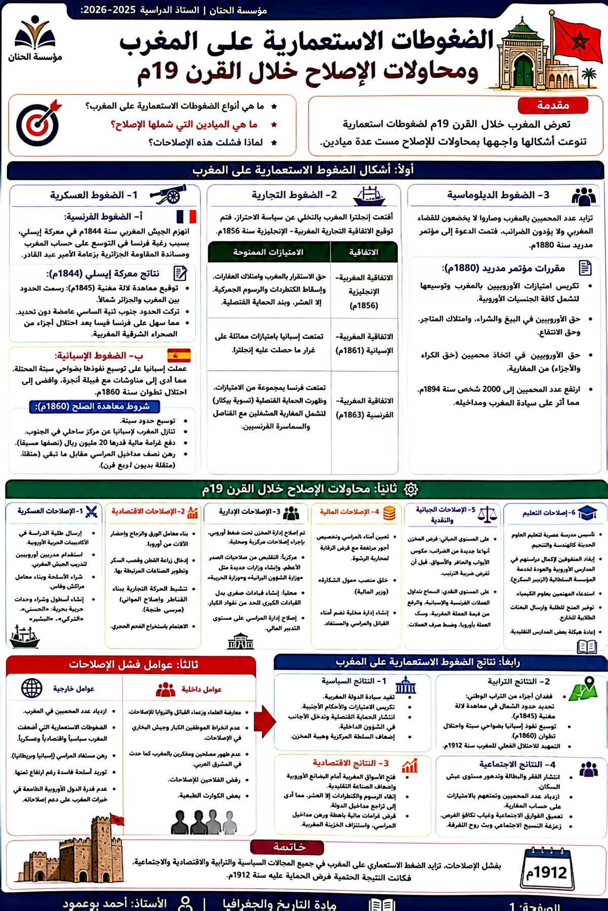
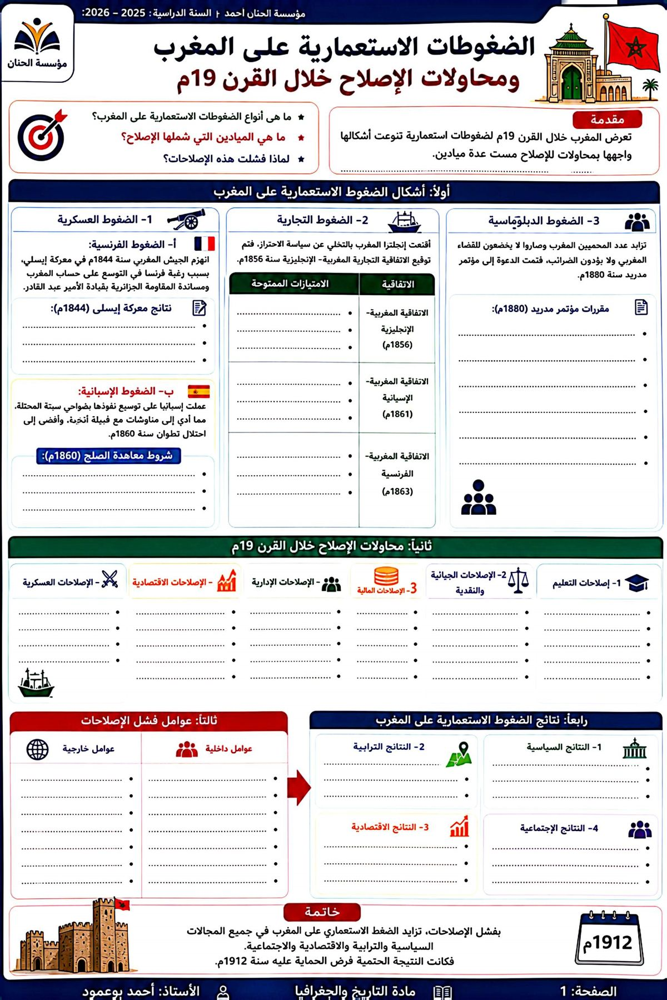

مؤسسة الحنان للتعليم الخاص
مادة التاريخ والجغرافيا
الموسم الدراسي
2025 / 2026
2025 / 2026
مادة التاريخ | المستوى: الأولى باكالوريا
الضغوط الاستعمارية على المغرب ومحاولات الإصلاح خلال القرن 19م
الدرس الخامس · التاريخ📘
مقدمة
تعرّض المغرب خلال القرن 19م لضغوط عسكرية (إيسلي، تطوان) وتجارية ودبلوماسية. وحاول المخزن القيام بإصلاحات في الميادين العسكرية والإدارية والتعليمية والمالية لمواجهة هذا التغلغل، إلا أنها باءت بالفشل بسبب المعارضة الداخلية وضعف التمويل والتدخل الأجنبي الذي كبّل المغرب بالديون.
❓
الإشكالية المركزية
ما أشكال الضغوط الاستعمارية التي تعرّض لها المغرب خلال القرن 19م؟ وما مضمون محاولات الإصلاح وأسباب فشلها؟
⚔️ ضغوط عسكرية
هزيمة إيسلي 1844 أمام فرنسا وفرض معاهدة للامغنية (ترسيم غامض للحدود)، وحرب تطوان 1860 التي أثقلت المغرب بغرامات مالية باهظة.
⚓ ضغوط تجارية
المعاهدة المغربية الإنجليزية 1856 والاتفاقية الإسبانية 1861، التي فتحت المغرب تجاريًا ومنحت الأجانب امتيازات واسعة (الحماية القنصلية).
📜 ضغوط دبلوماسية
تسوية بيكلار 1863 ومؤتمر مدريد 1880 اللذان وسّعا نظام الحماية القنصلية، مما أضعف سيادة المخزن وقلّص مداخيله الضريبية.
🎖️ إصلاحات عسكرية
بناء جيش نظامي عصري واستيراد الأسلحة.
💵 إصلاحات اقتصادية وجبائية
فرض ضريبة الترتيب لتجاوز الأزمة المالية الناتجة عن الغرامات.
🎓 إصلاحات تعليمية
إرسال بعثات طلابية إلى أوروبا واستقدام الخبرات.
🏠 أسباب داخلية
معارضة الزوايا والعلماء، وغياب طبقة داعمة للإصلاح، ورفض الفلاحين للضرائب الجديدة.
🌍 أسباب خارجية
المؤامرات الأوروبية، والقروض المجحفة، وتزايد الحمايات القنصلية التي أفرغت الإصلاح من فعاليته.
معركة إيسلي
مواجهة عسكرية انهزم فيها الجيش المغربي أمام فرنسا سنة 1844 إثر دعمه للمقاومة الجزائرية.
الحماية القنصلية
امتياز أُعفي بموجبه المغاربة المتعاملون مع الأجانب من الضرائب ومن الخضوع للقضاء المغربي.
معاهدة للامغنية
اتفاقية 1845 لترسيم الحدود بين المغرب والجزائر، تركت أجزاء جنوبية غامضة سهّلت التوغل الفرنسي لاحقًا.
ضريبة الترتيب
ضريبة فلاحية مثّلت أهم إصلاح جبائي حاولت الدولة فرضه لتجاوز الأزمة المالية.
📝
مهمة تدريبية
استخرج من المعطيات دور نظام الحماية القنصلية في تدهور أوضاع المخزن المالية والسياسية.
إنفوغرافيا الدرس ونسخة التمارين من كتيب الأستاذ أحمد بوعمود:

{kind=link}

{kind=link}
✍️
خاتمة
فشلت محاولات الإصلاح المغربية أمام تزايد الضغوط الاستعمارية والأزمات الداخلية، فكانت النتيجة الحتمية فرض نظام الحماية على المغرب سنة 1912م.
إعداد: الأستاذ أحمد بوعمود — أستاذ الاجتماعيات
مؤسسة الحنان · ahmedbouamoud.com